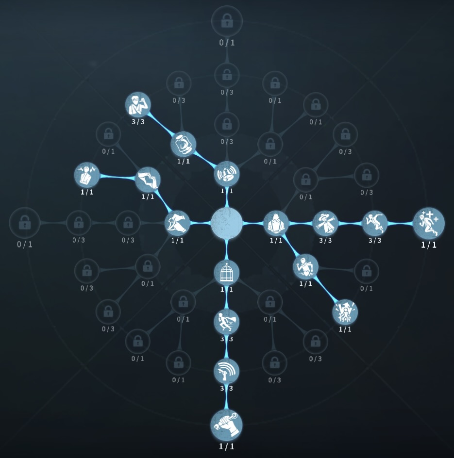
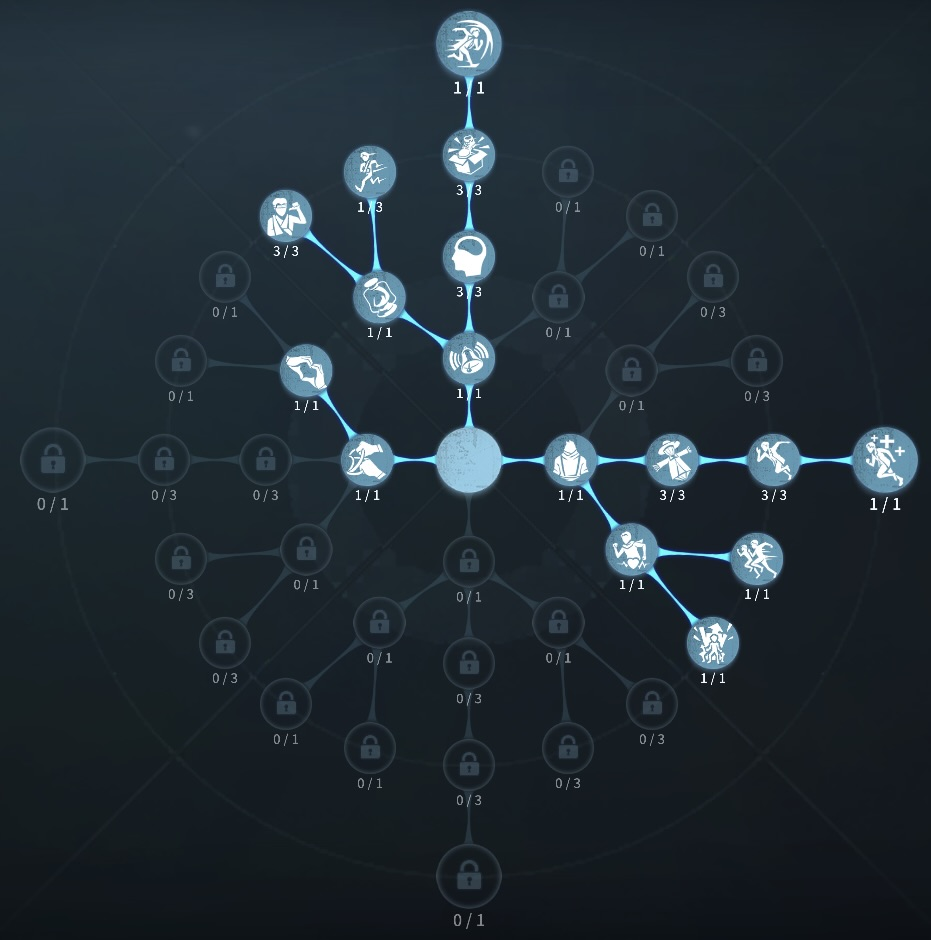

曲芸師の評価
爆弾で相手をほんろうする
外在特質と特徴
特質1:危険な雑技
・曲芸師は3種類の爆弾を携帯しており、爆弾を使用することで前方にジャンプして、前転し12m移動することができる。ジャンプしたタイミングで爆弾の種類に応じた3mの区間を生成でき、ハンターは踏んだりぶつけられたりすると影響を受ける。粘土爆弾はハンターの移動速度を5秒間30％低下させ、ハンターに直接ぶつけると5秒間35％低下する。
冷却爆弾はハンターの操作速度を10秒間35％低下させ、ハンターに直接ぶつけると10秒間40％低下する。
燃焼爆弾はハンターのスキルを5秒間使用不可、ハンターに直接ぶつけると8秒使用不可になる
特質2:即興演出
・条件を満たすと爆弾を追加で1種類につき1個まで獲得することができる。ロケットチェアからサバイバーを救助すると粘土爆弾を1つ獲得
解読進捗が計150％になった時冷却爆弾を1つ獲得
ハンターに60秒間追われると燃焼爆弾を1つ獲得
ただし、危機一髪中は獲得できない。
特質3:優柔不断
・ゲートの開門速度30％低下特徴
チェイスキャラ最有力候補！玉ポジションがあり爆延びチェイスが期待できる。
乗り越え駆け引きで負けても、玉を使うことでチャラにできる。
どんなハンターにもそれなりにチェイスができる。
基本的な立ち回り方
1. 追われた時
玉の温存は特に考えずファーストチェイスを延ばそう！
追われるに当たって玉選びが重要になってくる。
冷却爆弾は、3つの中で効果が発揮されにくいので、距離をとる時や窓枠乗り越えで使おう。
燃焼爆弾は、ハンターのスキルを封印したい時、ハンターが踏んでしまうルートに置いておこう。
粘土爆弾は、ハンターとの距離を取りたいとき、ハンターが踏んでしまうルートに置いておこう。
玉がもっとも有効活用できるポジションがあるのでそれも覚えておくとチェイスが延びる。
2. 追われない時
解読に専念しよう!
危機一髪採用の時は状況をみて、救助に行こう!
また、このマッチ（対戦）で一度も追われることがなさそうな時は、解読器まで玉を使って移動し、時間を短縮させよう。
おすすめの内在人格
危機一髪型人格
この内在人格は、孵化効果と観客効果で解読速度を上げて、癒合で回復を早める人格

フライホイール型人格
この内在人格は、ピア効果と防衛反応に振ることで救助後のチェイスを高める人格


みんなのコメント